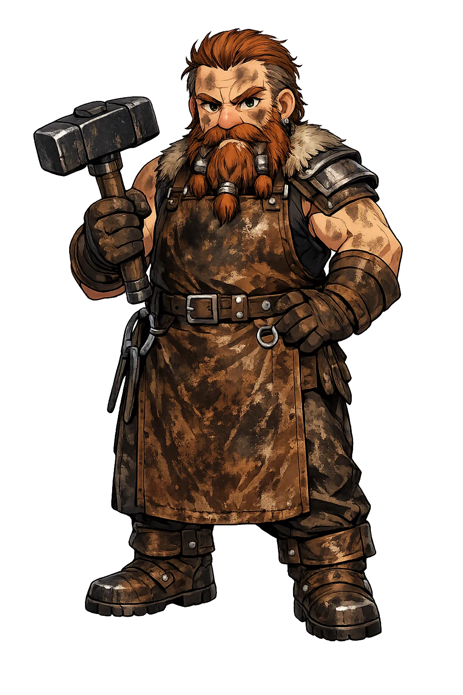
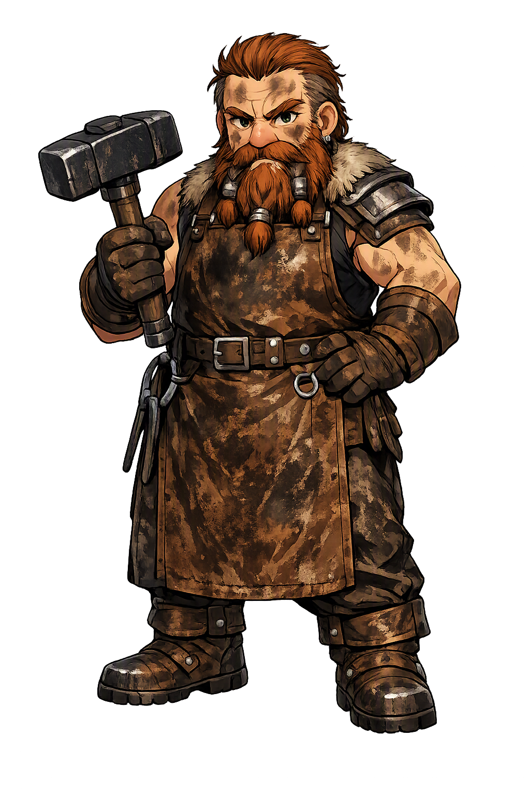

Unicode restoration and ASCII comparison
ᛒᚱᚢᚴᚴᚱ
The name in its original Norse form. Brokkr (ᛒᚱᚢᚴᚴᚱ) is attested in the source tradition — “Badger, panting”. Its original diacritics and script distinctions carry the full phonetic and orthographic weight of the source tradition.
brokkr
The plain brokkr form is identical to the Unicode restoration. Because this name is already written in Latin letters, no diacritics, stress, or script information were lost — only capitalization differs.
Brokkr
The Unicode restoration does not need to recover lost marks for Brokkr. Its value is canonical spelling and consistent cataloguing, not the reconstruction of erased orthography. The domain is readable as-is to both DNS and humanity.
Brokkr.com → brokkr.com
The non-ASCII characters in Brokkr are encoded while the ASCII remains visible. To the DNS, it is Punycode. To humanity, it is Brokkr.
How Brokkr travels from ancient script to the modern URL
Owned, ideal, and ASCII forms of Brokkr
Brokkr
Restores ᛒᚱᚢᚴᚴᚱ. The full Unicode restoration. brokkr.com is not in the PuniCodex collection — it is watched for release; if it drops, this temple upgrades to an owned flagship.
How Brokkr was spoken
The Wager of the Head, the Bellows, and the Three Treasures
Brokkr is the dwarf who worked the bellows while his brother worked the forge: the smith who took Loki's head as a stake and cast, in three heats, the boar Gullinbursti, the ring Draupnir, and the hammer Mjǫllnir — the greatest single afternoon's work in the northern corpus, interrupted only by a fly.
The crusher — the third casting, marred by a short handle, judged by the Æsir the best treasure of all: their surest defense against the rime-giants.
'Golden-bristled', also called Slíðrugtanni — the first casting, given to Freyr, whose bristles shine so brightly that night itself turns to day wherever he runs.
The dripper — the second casting, given to Óðinn, which drops eight rings of equal weight every ninth night; later laid on Baldr's pyre and sent back from Hel.
Brokkr's own station in the forge — the unbroken breath that held three heats steady until, on the last, a fly made him blink.
Stories of Brokkr
Brokkr has one story, and it is the founding legend of the gods' three greatest treasures: the wager of the head, told in Skáldskaparmál with a smith's eye for process — what went into the fire, what came out, and what each casting cost.
It begins with Loki's mischief: for a prank, he cut off all the hair of [[sif|Sif]], [[thor|Þórr]]'s wife. Þórr caught him and was set to break every bone in his body when Loki swore to go to the svartálfar, the black-elves, and have them make for Sif a head of hair from gold that would grow like other hair. Loki went to the dwarfs called the sons of Ívaldi, and they made the hair, and with it two more wonders: the ship Skíðblaðnir, which has a fair wind wherever it is bound and folds up like a cloth into a pouch, and the spear Gungnir, which never stops in its thrust. Three treasures stood finished — and Loki, rich in gifts he had not paid for, looked for one more bargain.
Grímnismál in the Poetic Edda keeps the first half of the record in verse: 'Ívaldi's sons went in days of old to make Skíðblaðnir, best of ships, for bright Freyr.' The poem names the ship and its makers; Snorri supplies the rest of the morning's work.
On his way home Loki stopped at the forge of the dwarf Brokkr and laid the strangest bet in the corpus: he wagered his own head that Brokkr's brother could not make three treasures as good as the three the sons of Ívaldi had just finished. Snorri names the brother at the forge Eitri; some manuscripts of the Prose Edda read Sindri, 'the sparkler', and the handbooks register both names for the same smith. Brokkr took the wager. The terms placed him at the bellows — Eitri would lay the work in the fire, and Brokkr was to blow without pause until it came out again, for the treasure would be exactly what the unbroken breath made it.
It is worth pausing on the stake: no god in the corpus wagers more. Loki bet his head because he counted the errand already won — the sons of Ívaldi had set the mark impossibly high. Brokkr bet his craft against it, which is to say he bet on the one thing a dwarf owns outright.
Eitri laid a pig's skin in the forge and Brokkr blew, and a fly settled on his hand and stung — but he blew on, and out of the fire came a boar with bristles of gold. Then gold was laid in the fire, and the fly settled on Brokkr's neck and stung twice as hard — but he blew on, and out came the ring Draupnir. Last, iron was laid in the fire, and Eitri said that everything would be spoiled if the blast faltered now; and the fly settled between Brokkr's eyes and stung the eyelid until blood ran down into his eye, and Brokkr swept the fly away and stopped the bellows for one instant — and when the work came out of the fire, the hammer's handle was short.
The story never names the fly, and never needs to: the corpus has exactly one character who travels in small shapes and profits by other people's work. What the stings could not do is the point of the tale — twice they failed entirely, and at the last they bought only a shortened handle on a hammer that would still be judged the best treasure in the world.
Brokkr carried the three treasures to Ásgarðr, and the Æsir took their judgment-seats — [[odinn|Óðinn]], Þórr, and [[freyr|Freyr]] were appointed to judge. Loki gave the spear Gungnir to Óðinn, the hair of gold to Þórr for Sif, and the ship Skíðblaðnir to Freyr, and boasted that no dwarf could match the set. Brokkr gave his gifts against them: to Freyr the boar Gullinbursti, which can run through air and water, day and night, better than any horse, and whose golden bristles give light wherever it goes; to Óðinn the ring Draupnir, from which eight rings of equal weight drop every ninth night; and to Þórr the hammer Mjǫllnir — never missing what it is thrown at, never failing to return to the hand, small enough when wished to be carried inside the shirt, and flawed in one thing only, that the handle is rather short.
The judgment was that the hammer was the best of all the treasures, and the greatest defense against the rime-giants. The wager was lost: Loki owed Brokkr his head.
Loki offered to ransom himself, and Brokkr refused every offer — there was no gold that would buy the stake back. Loki tried to run, on the shoes that carry him over sea and land, and Brokkr asked Þórr to catch him, and Þórr did. Then Loki reached for the letter of the bargain: the head was Brokkr's, he conceded, but the wager had said nothing of the neck — and no part of the neck might be cut. It was a trickster's reading and the court allowed it; the head could not be taken. Brokkr took the price another way: he declared he would sew Loki's lips together, and pierced them with an awl and stitched the mouth shut with the thread called Vartari — the smile that had sold Sif's hair closed over the teeth for a while.
Snorri ends the episode there, and it is one of the corpus's quietest verdicts: the wager was won, the loophole was honored, and the smith still left the hall with something. The gods keep the treasures; Loki keeps his head; and Brokkr keeps the only thing the story ever really put at stake — the record of having made Mjǫllnir.
Brokkr is the patron of the work that speaks for itself. He does not argue with the boast that the sons of Ívaldi cannot be matched; he puts his head's opponent on the bellows' far side and makes three treasures in an afternoon. He is stung, and blows on. He is sabotaged at the last instant, and the flaw that results — a short handle — is the only thing the trickster ever wins from him, and the Æsir judge the marred hammer best of all. And when the bargain's letter is turned against him, he does not rage at the loophole; he takes what the letter leaves. The corpus is full of oaths broken and bargains twisted, and against them all it sets this small, perfectly kept account: a smith who bet everything on his craft, lost nothing that mattered, and sewed shut — for a while — the mouth that thought skill was a bluff.
Enter Extended Lore